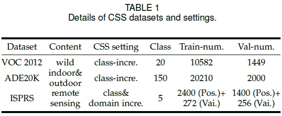
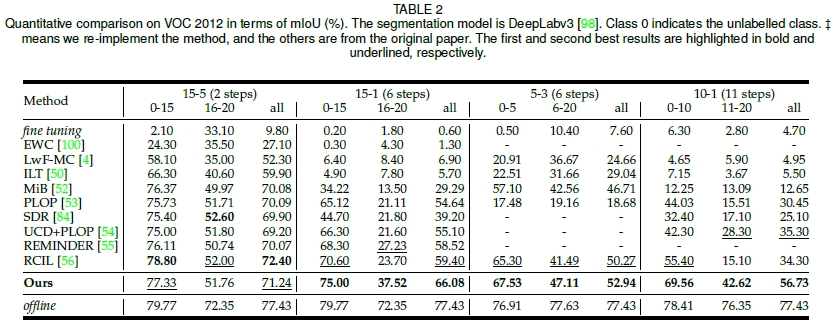
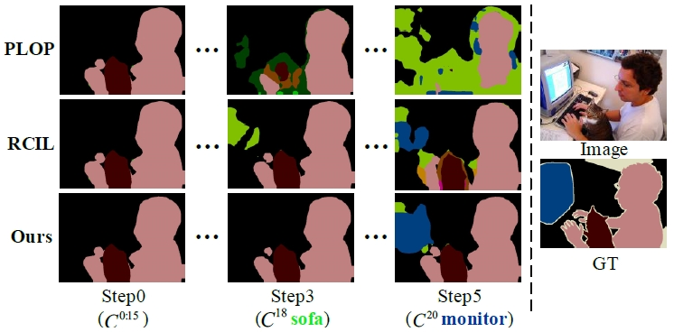
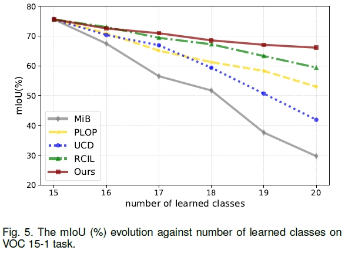
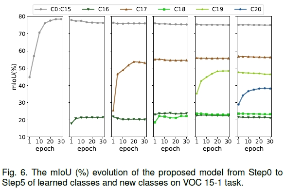
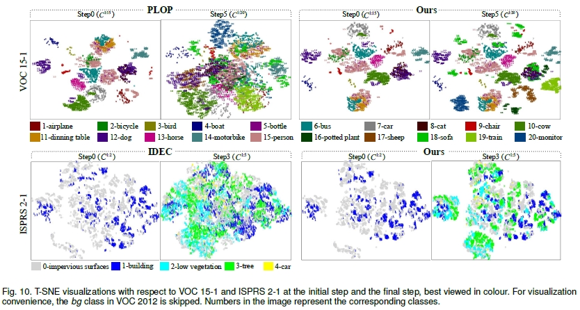

Learning at a Glance: Towards Interpretable Data-limited Continual Semantic Segmentation via Semantic-Invariance Modelling - TPAMI 2024
摘要
基于增量学习范式(Incremental Learning, IL)的持续语义分割(Continual Semantic Segmentation, CSS)是发展类脑感知语义分割的重要研究方向。然而，当前的CSS方法在保存旧知识和学习新的数据存在不平衡的问题，且大部分CSS模型仍然需要大规模的带标注的数据来进行增量训练，并且缺乏可解释性。在本文中，我们提出一个新的持续语义分割模型LAG，一个有效的，稳健的，类脑的和可解释的CSS方法。LAG是一个简洁的且与模型无关的架构，能够在有限的增量数据条件下实现良好的CSS效能。本文的灵感来源于类脑感知识别的模式。具体地，本文提出了一种基于语义特征解耦的语义不变建模方法，所提出的解耦方式包括两种:通道维解耦和空间维神经元相关语义一致性。本文将语义知识建模为语义不变性知识和样本相关性知识。通过语义不变知识的建模，将其作为知识原型进行回放，以缓解模型的灾难性遗忘；同时利用非对称对比学习驱动模型提高对样本相关性知识的区分能力。此外，本文还构建了一种新的有限增量数据条件以及一个新的持续语义分割设定：类别增量+领域增量。在多种通用语义分割数据集上证明了本文方法的有效性，特别是在有限增量数据条件下超过了现有的CSS模型。
主要贡献
本文提出一种有限增量数据条件下的持续语义分割方法。该方法基于人类认知模式，将图像的高维特征分解耦为语义不变性特征和样本相关性特征，并针对性设计知识迁移方法以增强模型在持续语义分割任务上的性能。针对持续语义分割任务中面临的三大难点问题：
1）持续学习过程中对旧知识的灾难性遗忘；
2）新旧知识之间的语义混淆；
3）模型泛化性差；
本文通过设计并构建基于解耦知识蒸馏的迁移学习方法，实现对新旧知识的兼容。并通过基于梯度加权的特征解耦对齐方法增强持续学习语义分割模型的鲁棒性和泛化性。具体地，
1）针对持续学习过程中的灾难性遗忘问题，提出一种基于人类认知模式的特征解耦机制，将图像的高维特征解耦为语义不变性特征和样本相关性特征，且二者满足通道维加性关系；
2）针对持续学习过程中新旧知识之间的语义混淆问题，提出一种解耦知识蒸馏方法，在新旧模型之间分别建立语义不变性特征和样本相关性特征的相似性约束，减少语义混淆；
3）针对持续学习模型在跨类别和跨模态增量条件下的泛化性差的问题，提出一种基于神经元相关性的语义一致性约束，将旧模型和新模型输出的特征进行基于欧式距离的约束，实现新旧模型之间的有效知识迁移，增强持续语义分割模型的泛化性和鲁棒性；
4）为了在有限增量数据条件下，提高持续增量语义分割模型对旧知识的继承能力，提出了一种基于不确定性的伪标注生成方法，为新模型的训练提供可信赖的监督信息。
流程图

实验结果
数据集
本文采用了三种图像分割数据集：
- Pascal VOC 2012：共21类（其中有一个背景类），其中训练集10582张图像，验证集1449张图像。增量学习设定包括15-5 (2 steps),15-1 (6 steps),5-3 (6 steps),10-1 (11 steps)。
- ADE20K：共150类，其中训练集20210张图像，验证集2000张图像。增量学习设定包括100-50(2 steps),100-10(6 steps),50-50(3 steps),100-5(11 steps)。
- ISPRS Postdam&Vaihingen：6类，实验时去除了占比少且语义不清晰的背景类。Postdam原始图像大小为60006000，训练时切割为600600的patch。增量学习设定包括4-1(2 steps),2-3(2 steps),2-2-1(3 steps),2-1(4 steps)。
CSS Protocols
常见的CSS设定包括以下三种：
1） Sequential：每个步骤会出现包含旧类和新类像素的标签。
2） Disjoint：新的图片只包含了新类的标签，旧类放在了背景中，不包含未知类。
3） Overlapped：只有新类被注释，而其余的设置为背景，可能包含未知类。
其中Overlapped更加符合实际情况，因此本文采用Overlapped设定开展实验。
实验结果




可解释性分析

总结
本文提出的持续语义分割方法将人类认知机制建模到持续学习任务中，将神经元相关性约束嵌入到持续学习模型中，提出的解耦知识蒸馏方法提高了模型抗遗忘能力和缓解语义漂移的能力，在提高模型持续学习性能的同时增强模型的可解释性，能够在有限增量数据条件下实现鲁棒性更强的持续学习能力。